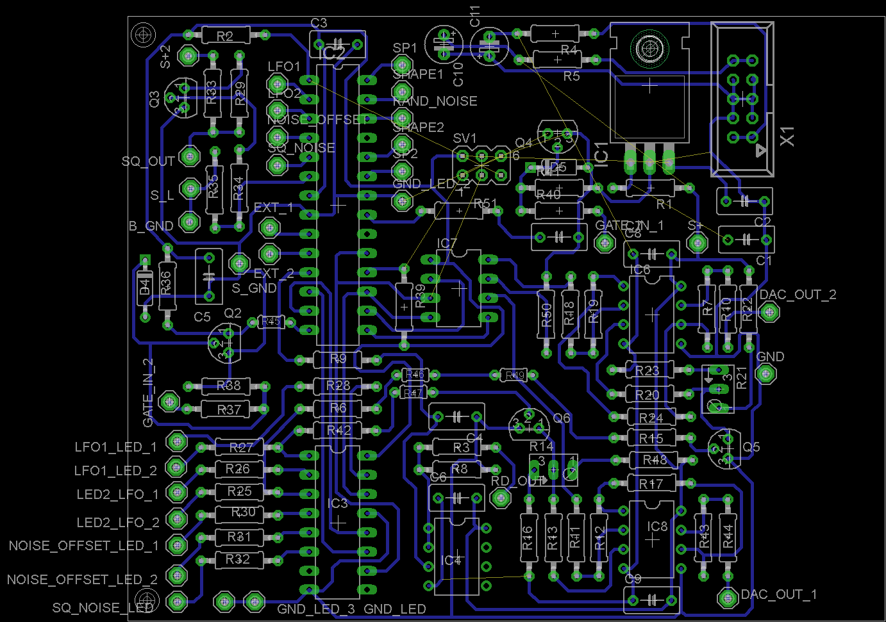

MR TAGOMI
I needed something compact and full of features for my small (at the time) eurorack system. Something that could avoid having multiple modules
giving simple things as LFO, SH, random, boolean logic, simple sequencer. Surprisingly enough the project led to some more interesting
fonctions as random sequencers, probability generator and such. The idea went trough several variation to finish on a polished product.
Conceptually, the all thing isn't that complex. It is based around an Atmega 328P and a 2x8bit dac (MCP4802). The sampling rate is at 8Khz via an ISR.
The third channel is produced by a timer used in PWM mode.
As the PWM needed to be heavily low pass fitered, I use the same cutt off frequecny for all outputs for consistecy, therefore
some algorythm were left appart because they were impacted by the very low filter.
Consitecy between channels was important to really have three identical outputs. Despite the low cut off, fast rising edges are still sharp enough to be
used as gate.
Code wise, I created a struct containing key elements and general purpose 8bit and 16bit registers. A struct is declared
for each channel, and a "generic" fonction take a pointer to a struct as argument modifying data directly via pointers.
Other than that, the all code is the traditional stuff, a bit of SPI for the DAC and the display. A bi-color led was used to distinguish modes giving 4 different modes.
(RED and green can be combined to give an orangish color). That wasn't enough and I though it could be fun to have more. This led to the developement of the Synthi biscuit.

later on, I judged the user interface not good enough and decided to replace the LED by 7 segments display to add more algorythms. This was the birth
of the synthi biscuit.
 SYNTHI BISCUIT
SYNTHI BISCUIT
{kind=link}
{kind=link}
{kind=link}